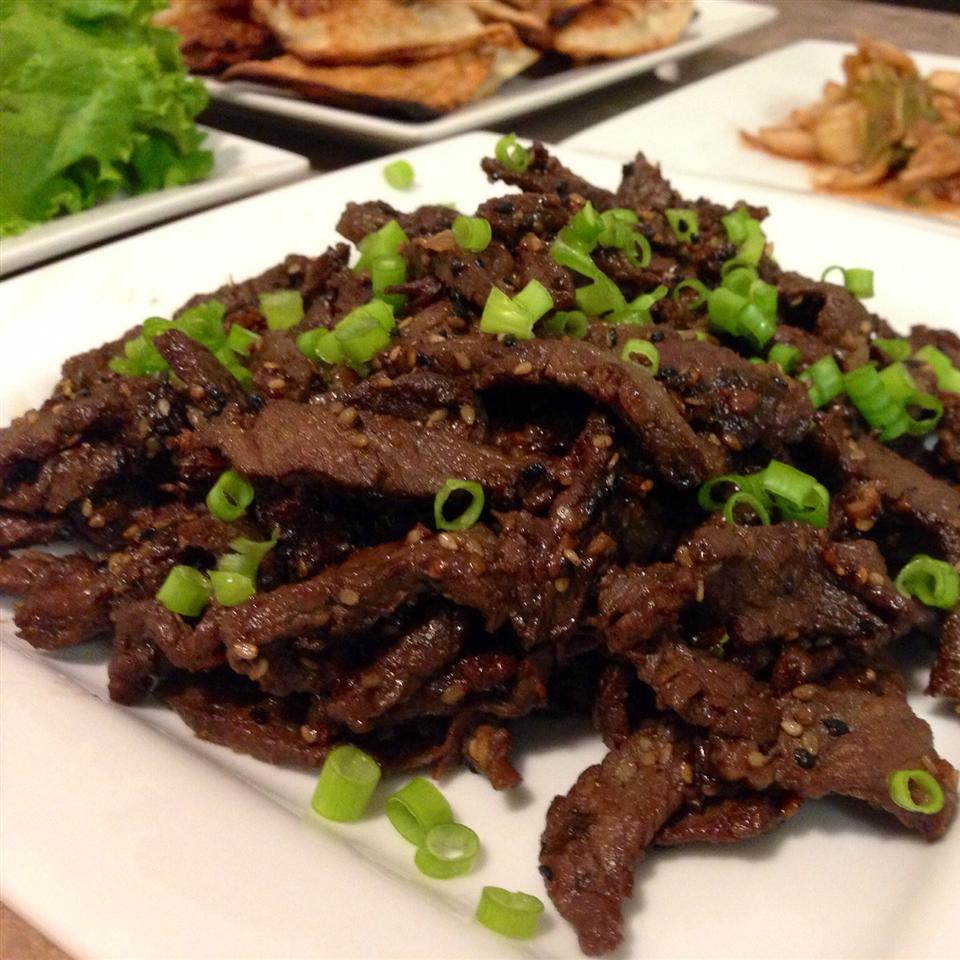

Beef Bulgogi

Description
Just like my Korean mom makes it!
It's delicious! Even better if rolled up in red leaf lettuce with rice and hot pepper paste.
- 1 pound flank steak, thinly sliced
- 5 tablespoons soy sauce
- 2½ tablespoons white sugar
- ¼ cup chopped green onion
- 2 tablespoons minced garlic
- 2 tablespoons sesame seeds
- 2 tablespoons sesame oil
- ½ teaspoon ground black pepper
- Place the beef in a shallow dish. Combine soy sauce, sugar, green onion, garlic,
sesame seeds, sesame oil, and ground black pepper in a small bowl.
Pour over beef. Cover and refrigerate for at least 1 hour or overnight.
- Preheat an outdoor grill for high heat, and lightly oil the grate.
- Quickly grill beef on hot grill until slightly charred and cooked through,
1 to 2 minutes per side.